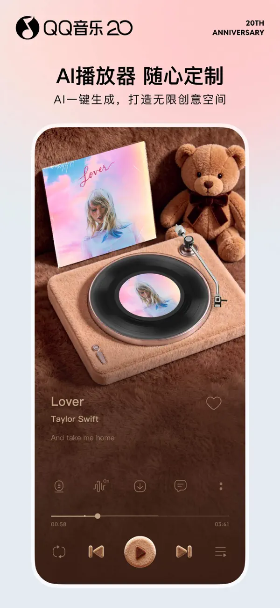
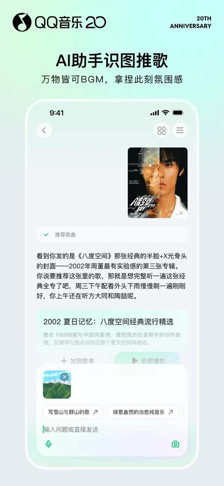

(00) / MUSIC UNIVERSE
Listen/让音乐发生。
听我想听
Music Universe
A SPACE FOR EVERY SOUND(01) / 播放与歌词
Play/一首歌，
一个世界。
从第一段前奏，到最后一句歌词。用喜欢的播放器，装下此刻的心情。
PLAYBACK
复古唱片与个性播放页
LYRICS
歌词随音乐流动
MOOD
让每次播放都有自己的仪式感
Play/
THE ART OF LISTENING

(02) / 发现与推荐
Discover/下一首，
刚好是你。
从熟悉的喜欢，出发到未知的惊喜。个性推荐、专属电台与精选歌单，连接每一次偶然的心动。
FOR YOU
依照你的音乐口味推荐
DISCOVERY
在歌单里发现新的心动
RECOGNITION
听歌识曲，留住偶然遇见的旋律
Discover/
A SOUND THAT FINDS YOU

(03) / 音质与音效
Hi-Fi/不止听见，
置身其中。
人声、乐器、空间。探索无损音质与专业音效，让每个细节都值得用心聆听。
QUALITY
无损品质曲库
SOUNDFIELD
专业音效，适配聆听场景
EXPERIENCE
声波随本页舞台配乐变化
本页音乐为舞台配乐，声波展示不代表实际音质测评。
Hi-Fi/
FEEL EVERY FREQUENCY
(04) / 个性表达
Express/你的音乐，
你的模样。
百变播放器、AI 创意与歌词海报。把喜欢的音乐，变成自己的表达。
PERSONALITY
百变播放器
AI CREATIVE
以创意定制音乐外观
EXPRESSION
分享你的听歌心情
Express/
MAKE IT YOURS